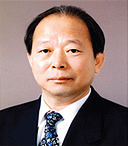

三益THK(株)
- Home
- 投资优势
- 外商投资企业的成功事例
- 三益THK(株)
三益THK(株)
公司介绍
1960年，主要生产工业用锉刀而成立的三益THK公司，它在1972年主要生产家庭用品—米桶，到1984年作为多元化系列，开始着手直线运动(Linear Motion)系统项目之后，于1991年同直线运动轴承领域的世界著名品牌公司—日本THK(株)合资并签订了技术引进协约，从而实现了“LM 向导”国内首次国产化。该产品现在已经成为工厂汽车与半导体装备所需的LM系统的主力产品。三益THK公司是有着46年历史的传统中坚企业，它拥有三益AUTOTECH(株)、三益KIRIU(株)、三益精工(株)、(株)THK-三益SLIDE、三益HDS(株)等系列子公司。
一般现况
- 投资国/投资企业：日本/THK(株)
- 成立年度：1960年5月
- 法人代表：陈英焕(JIN YOUNG-HWAN)
- 员工人数：342名
- 主要产品：LM 系统、机电系统、谐波驱动等
- 地址：大邱广域市 达西区 月岩洞 1005号
发展历史
- 1960年05月：创立三益工业公司
- 1991年05月：和日本THK公司合资并签订技术引进协约
- 2001年05月：商号改为三益LMS(株)
- 2006年04月：商号改为三益THK(株)
竞争力与前景
通过和日本THK(株)公司的技术交流，占领了在直线运动领域中先进企业的地位。销售额每年以约20%的上涨趋势持续上升。2006年3月，该公司在搬迁到扩建的新工厂后，有着希望能实现节约原料和提高生产力的目标。